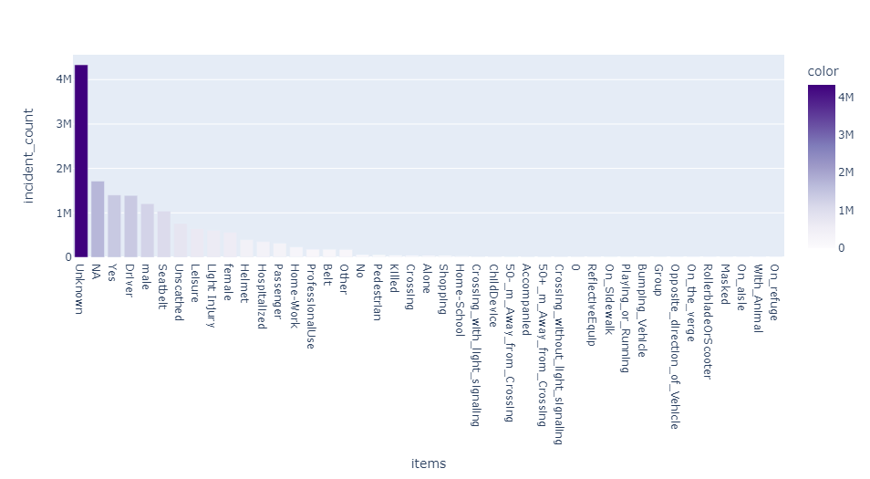
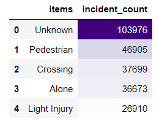
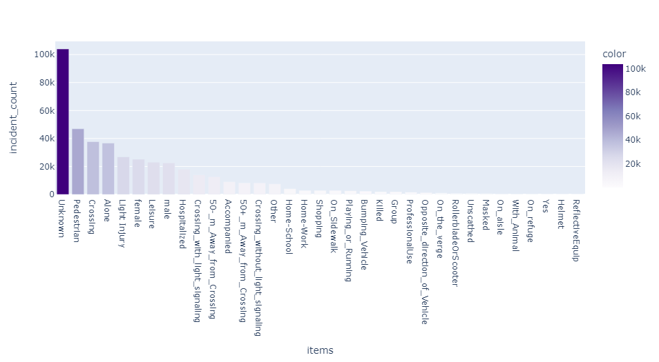
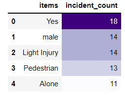
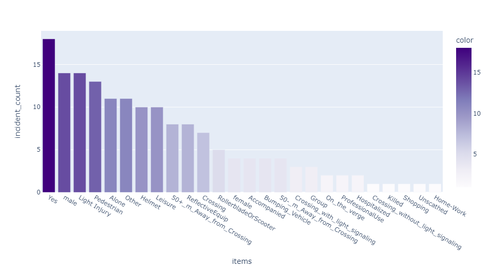

Introduction
The author of the dataset I used says,
"Every year, road accidents cause thousands of deaths. I strongly Believe that Data Science can be used for good, That's why I
decided to make this contribution."
I hope that I can help by performing an FP-Growth analysis on the given dataset. This analysis will create association rules
between the variables and will hopefully reveal who is the most dangerous user.
Before we can do any analysis, it is important that we understand the data. In this dataset, there are 12 columns. Most of these
are in French, but I will do my best to translate with the help of Google Translate.
The columns in order of the users.csv file are Acc_number (Accident Identifier), place (User Location in the Vehicle),
catu (User Category), grav (Severity of the Accident), sexe (Sex of the User), trajet (Reason for the Trip),
secu (Safety Equipment), locp (Location of the Pedestrian), actp (Action of the Pedestrian), etatp (How many Pedestrians),
an_nais (User's Year of Birth), and num_veh (Offending Vehicle). I will drop the columns Acc_number and num_veh because
they are identifiers that could skew the analysis. I will also drop the place column because it is not explained and doesn't
provide any value to me, and I will drop the birth year column, because it is not categorical and makes the analysis slugish.
With all of that said, let's get into it.
Who is the most dangerous driver?
By running an FP-Growth Analysis on all of the records which are not null, the most common words are 'Unknown' and 'NA'. That isn't very helpful because 'Unknown' is a variable in multiple columns, so there is no way to know which column is most prominent. This is the resulting bar chart from that analysis. 
A better analysis
By limiting the amount of rows with 'Unknown', it creates a much better analysis. I could not entirely eliminate all instances
of 'Unknown', however, because that creates a dataset with only 18 rows. Below are the resulting graphs from limiting the
instances of 'Unknown'. 'Unknown' is still the most common instance, but limiting the instances creates an entirely new analysis
which shows the most at risk user is a pedestrian crossing alone and they are most likely to suffer a light injury.


Just for fun
Just for fun, I ran an analysis on only 18 rows of data. These are the rows which do not have any instances of 'Unknown' or 'NA'.
Now the most common words are 'Yes' and 'Male'. Indicating that the most dangerous driver would be a male using safety equipment
who lightly injured a pedestrian who was walking alone. How unfortunate.


To see the association rules for each analysis, visit the sources page and download the CSV files
there.